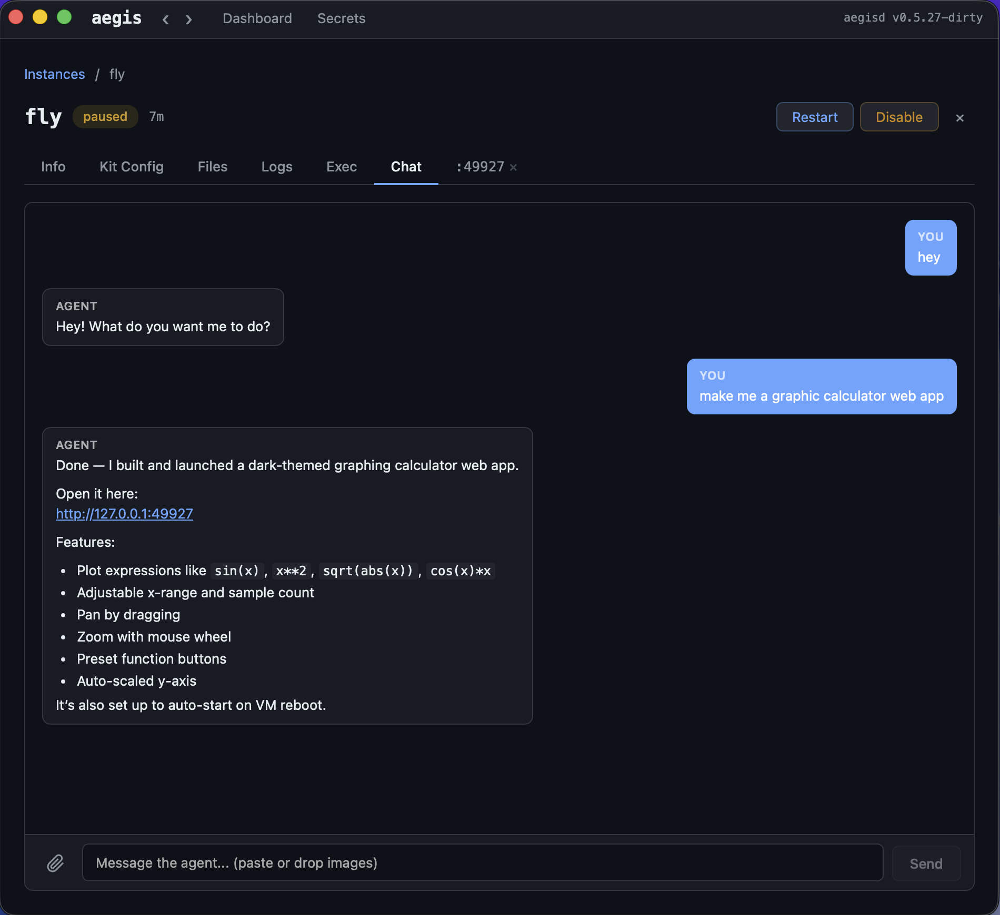
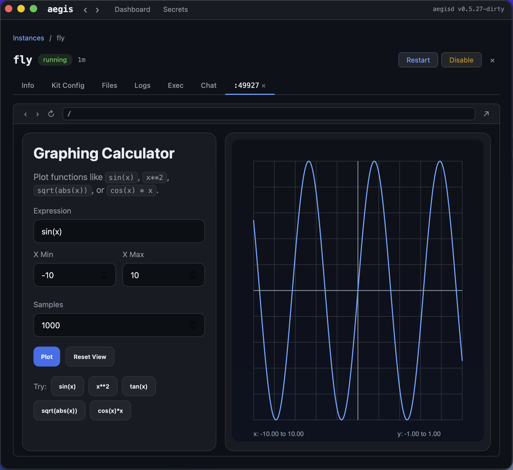

A local, scale-to-zero microVM runtime for autonomous agent workloads.
Real VM isolation. Sub-second boot. Wake on demand.


Agent workloads don't fit containers or serverless. They run for minutes or hours, need real isolation, maintain long-lived connections, and sit idle most of the time.
Each instance is a microVM with its own kernel. Not a container sharing the host kernel. Code inside cannot see your files, network, or processes.
Nothing runs unless triggered. Paused VMs resume in ~35ms. Stopped VMs cold-boot in ~500ms. The router wakes VMs on incoming connections automatically.
Everything runs locally. No cloud dependency, no per-second billing, no data leaving your machine. Full control over your agent infrastructure.
| Alternative | Limitation |
|---|---|
| Docker / Podman | Shared host kernel — no real isolation. No scale-to-zero or wake-on-connect. |
| E2B | Cloud-hosted — your data leaves your machine, pay per-second. |
| Firecracker / CH | VMMs, not runtimes. No lifecycle, networking, port mapping, or guest agent. |
| Lambda / Cloud Functions | Stateless, second-scale cold starts, no persistent connections or ports. |
| Running on host | No isolation, no resource limits, agents can read your files and credentials. |
MicroVMs boot in ~500ms cold, resume in ~35ms from pause. Powered by libkrun on macOS (Apple HVF) and Cloud Hypervisor on Linux (KVM).
Declare ports with --expose. The router accepts connections, wakes the VM, and proxies traffic. No manual lifecycle management.
Use any Docker image as the VM filesystem. --image python:3.12, --image node:20. Env vars automatically propagated.
Mount host directories into VMs at /workspace. Share project files between host and agents seamlessly.
AES-256-GCM encrypted store. Explicit injection only — agents get only the secrets you specify. Default: inject nothing.
Ship with an MCP server that lets LLMs (Claude Code) drive sandboxed VMs directly — start instances, exec commands, read logs, manage secrets.
Optional add-on bundles that extend the runtime. Core AegisVM is a clean sandbox substrate. Kits add opinionated capabilities on top.
Native app with everything bundled — runtime, CLI, daemon, Agent Kit. Dashboard, chat, logs, exec, config editor, secrets manager.
22 built-in tools, persistent memory, scheduled tasks, web search, image generation, multi-agent orchestration. All in a ~120MB idle footprint with scale-to-zero.
Auto-injection into LLM context
Scale-to-zero cron
Connect agents to Telegram and other messengers. The gateway stays running while VMs sleep — wake-on-message with zero config.
Agents can spawn child VMs for sub-tasks. Each child gets its own isolated environment with configurable depth limits.
OpenAI, Anthropic, or local models via Ollama/LM Studio/vLLM. Switch models per-agent with a config change.
| Agent Kit | OpenClaw | |
|---|---|---|
| Architecture | Modular Go binary + optional MCP | Monolithic Python framework |
| Idle footprint | ~120MB | ~200MB+ |
| Core tools | 22 built-in (Go, zero overhead) | Python-based, runtime-dependent |
| Memory | Built-in with auto-injection | Requires external service |
| Cron | Built-in with scale-to-zero | Not included |
| VM isolation | Real microVM per agent | Container or process |
| Scale-to-zero | Native (pause/resume in ms) | Not supported |
Host
├── aegisd daemon: API, lifecycle, router, VMM backend
├── aegis CLI
├── aegis-mcp MCP server for host LLMs (Claude Code integration)
├── aegis-gateway per-instance daemon (Telegram bridge, cron scheduler)
│
└── VMM (libkrun / Cloud Hypervisor)
├── VM 1: aegis-harness (PID 1) → user command
├── VM 2: aegis-harness (PID 1) → aegis-agent (Agent Kit)
│ ├── 22 built-in tools (Go, compiled in)
│ ├── memory, cron, sessions (workspace-backed)
│ └── LLM API (OpenAI / Anthropic / local)
└── ...
Everything flows through Tether — Claude Code delegation, Telegram messages, cron tasks, multi-agent orchestration.
Host (Claude Code) ──tether──► Agent VM ──tether──► Child Agent VM Telegram ──gateway──► tether ──┘ Cron ──gateway──► tether ──┘
Paused VM wakes in ~35ms on incoming tether frame. Gateway stays running while VMs sleep.
Each conversation gets independent history. Persists across VM restarts.
Send messages and read responses later. Long-poll support for real-time streaming.
Install the MCP server and Claude Code can drive sandboxed VMs directly.
$ aegis mcp install # register with Claude Code
# Now in Claude Code:
Claude: tether_send(instance="my-agent", text="Research ML frameworks")
Claude: tether_read(instance="my-agent", wait_ms=30000)
→ The agent responded with a detailed comparison...Connect an agent to Telegram — messages wake the VM, agent responds, VM goes back to sleep.
$ aegis secret set OPENAI_API_KEY sk-...
$ aegis secret set TELEGRAM_BOT_TOKEN 123456:ABC-...
$ aegis instance start --kit agent --name my-bot \
--secret OPENAI_API_KEY --secret TELEGRAM_BOT_TOKEN
# Send a message to your bot on Telegram — it just works.
# VM wakes in ~35ms, processes, responds, sleeps.Agents can create their own cron jobs. The gateway triggers them even while the VM is paused.
You: Check Hacker News every morning and send me a summary on Telegram.
Agent: I'll set up a daily cron job for that.
→ cron_create("0 8 * * *", "Check HN top stories and notify")
Done. You'll get a summary at 8 AM daily.Download the desktop app or install via Homebrew.
brew tap xfeldman/aegisvm && brew install aegisvmaegis upaegis run -- echo "hello from a microVM"aegis secret set OPENAI_API_KEY sk-...
aegis instance start --kit agent --name my-agent --secret OPENAI_API_KEYDesktop app with everything bundled — core runtime, CLI, daemon, Agent Kit.
brew tap xfeldman/aegisvm && brew install aegisvmcurl -sSL https://raw.githubusercontent.com/xfeldman/aegisvm/main/install.sh | sh